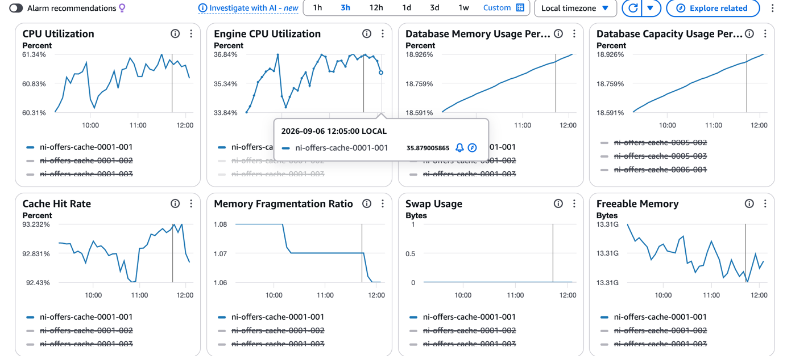

AWS ElastiCache · Redis
A plain-English guide to the metrics you see when you open a cache → select a node → Monitoring. Includes a full read-through of a real dashboard from ni-offers-cache.
Think of an ElastiCache Redis node as a machine whose whole job is:
Receive Redis commands → process them → read/write data in memory → return response
Each metric watches a different part of that pipeline:
| Part of the pipeline | Metric that watches it |
|---|---|
| The machine as a whole | CPU Utilization |
| Redis processing the commands | Engine CPU Utilization |
| Data sitting in memory | Database Memory / Capacity Usage, Freeable Memory |
| How efficiently that memory is packed | Memory Fragmentation Ratio, Swap Usage |
| Whether the answer was actually there | Cache Hit Rate |

ni-offers-cache → node ni-offers-cache-0001-001 → 3-hour window (≈09:30 – 12:15 local). Greyed-out legend entries are the other nodes in the cluster, deselected so only one node's line is drawn.CPU usage of the entire node — every core, every process. Redis plus everything else the box does: OS work, networking, TLS handshakes, backups/snapshots, monitoring agents, replication traffic.
CPU Utilization = 60% → roughly 60% of the node's total CPU capacity is in use
In the screenshot: steady between 60.31% and 61.34% for the full 3 hours. Stable, no trend.
Redis is the "engine". This isolates CPU consumed by the Redis process alone — the part actually running your GET, SET, HGETALL, ZRANGE commands.
CPU Utilization ≈ 61% Engine CPU Utilization ≈ 36%
So CPU Utilization is the broader number; Engine CPU Utilization is the focused one. The ~25-point gap between them is everything that is not Redis command processing — OS, network, TLS, replication, monitoring.
In the screenshot: range 33.84% – 36.84%, and the tooltip pins an exact reading:
2026-09-06 12:05:00 LOCAL ni-offers-cache-0001-001 → 35.879005865
That is the precise datapoint value at that timestamp — hovering any CloudWatch line gives you this.
KEYS *, big SORT, large ZRANGE, huge HGETALLRedis keeps your data in RAM. This is the percentage of the node's usable memory occupied by your cached data plus the engine's own overhead.
Available memory = 100 GB Data currently stored = 20 GB -------------------------------- Database Memory Usage = 20%
In the screenshot: a clean straight climb from 18.591% to 18.926% across 3 hours — about +0.33 percentage points every 3 hours.
| Range | What it means | What to do |
|---|---|---|
| 0 – 50% | Comfortable (this node: ~19%) | Nothing |
| 50 – 75% | Normal working range | Watch the growth trend |
| 75 – 90% | Getting tight | Check TTLs and key growth; plan a scale-up |
| > 90% | Memory pressure | Evictions start (per your maxmemory-policy); hit rate drops; writes may fail under noeviction |
Usually the single most important metric, because it answers the real question: is this cache actually helping?
GET customer:123 customer:123 → offer123 ✅ FOUND Redis returns it immediately. No database call needed.
GET customer:456 customer:456 → (nil) ❌ NOT FOUND App must now go to DynamoDB / SQL / downstream service, fetch the value, and (usually) write it back into Redis.
100 Redis read requests 93 → found in Redis (hits) 7 → not found (misses) Cache Hit Rate = 93 / 100 = 93%
In the screenshot: the band is 92.43% – 93.232%. About 93 of every 100 requests are served straight from Redis and never touch the database.
There is a visible dip to ~92.43% around 10:45–11:00, recovering to ~93.2% by 11:45. In plain terms: misses went from ~7 per 100 to ~7.6 per 100 for a few minutes — roughly an 8% bump in database traffic, then back to normal. That size of wobble is routine (a batch job, a burst of new keys, a cold key range) and needs no action.
cust:123 but reads customer:123Looks almost identical to Database Memory Usage, and in this screenshot the numbers are literally the same — 18.591% → 18.926%. The difference is the denominator:
maxmemory (the RAM ceiling).Note also that this panel's legend lists different nodes — 0005-002, 0005-003, 0006-001 — confirming this is a multi-shard cluster, not a single node. Node names read as <cache>-<shard>-<replica>, so 0001-001 is shard 1, node 1.
Memory the OS handed to Redis ÷ memory Redis actually uses.
| Value | Meaning |
|---|---|
~1.0 – 1.5 | Healthy. Small gaps are normal. |
> 1.5 | Wasteful — memory is being lost in gaps between allocations. Often follows lots of varied-size writes and deletes. |
< 1.0 | Bad. Redis has been pushed into swap. Latency collapses. |
In the screenshot: 1.08 stepping down to 1.06. Comfortably in the healthy band, and improving.
Bytes of swap in use. Redis is an in-memory store; the moment any part of it lands on disk, response times go from microseconds to milliseconds.
In the screenshot: a flat line at 0 for the entire window. This is exactly what you want — swap should always be zero. Anything above zero on a Redis node is worth investigating immediately.
The absolute counterpart to the percentage metrics. Percentages tell you the ratio; this tells you the actual room left.
In the screenshot: ≈ 13.31 GB, jittering within a hair of that value for 3 hours. Flat is the correct shape — a steady decline toward zero is the warning sign.
| What you see | Likely story |
|---|---|
| Engine CPU high, node CPU moderate | Redis itself is the bottleneck — expensive commands or too many ops/sec. Scale out (more shards) or fix the hot commands. |
| Node CPU high, Engine CPU low | Something other than command processing — TLS, backups, replication, network. Redis is fine. |
| Memory high + hit rate falling | Evictions. Scale up memory, cache less, or tune TTLs. |
| Hit rate low, memory low | Not a capacity problem — wrong keys, wrong TTL, cold cache, or caching data nobody re-reads. |
| Swap Usage > 0 | Urgent. Redis is on disk. Latency will be terrible. Scale up memory now. |
| Fragmentation > 1.5 | Memory wasted in gaps. Often resolves after a failover/restart; consider activedefrag. |
| Freeable Memory declining steadily | Something is growing without bound. Cross-check against Database Memory Usage. |
| Everything fine but the app is slow | Look outside the cache: network, client-side connection pooling, or the downstream database. |
CPU ↓ "How busy is the machine?" Engine CPU ↓ "How busy is Redis?" Memory ↓ "How much data/RAM is Redis using?" Cache Hit Rate ↓ "How often does Redis actually have the data I need?" Fragmentation / Swap / Freeable ↓ "Is that memory clean, in RAM, and is there room left?"
| Metric | What it means |
|---|---|
| Evictions | Keys Redis deleted to free space. Should be zero or near-zero. Rising evictions are the direct cause of a falling hit rate. |
| Reclaimed | Keys removed because their TTL expired. Normal and healthy — do not confuse with evictions. |
| CurrConnections | Open client connections. Sudden jumps often mean a client is leaking connections. |
| NetworkBytesIn / Out | Traffic volume. Useful when values are large and bandwidth — not CPU — is the real limit. |
| ReplicationLag | How far behind a replica is from its primary. Matters if you read from replicas. |